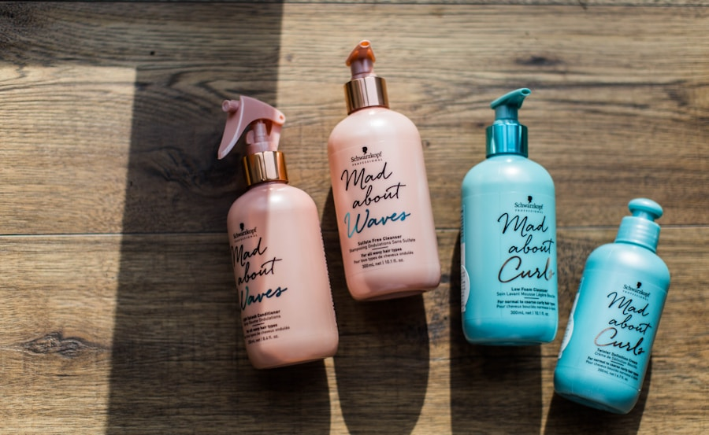

LOT LIN-1968
Lin Bio Normand

Coiffage Végétal Naturel
Brume de Mise en Plis au Lin Bio 150ml
Véritable alternative aux laques chimiques. Le mucilage de lin brun de Normandie sculpte la boucle avec souplesse, sans aucun résidu blanc ni effet cartonné.
Botanique : Linum usitatissimum mucilage • Lavandula angustifolia hydrosol • Citrus aurantium flower water.
Flacon verre ambré 150ml
Anti-humidité
Zéro alcool desséchant
22,00 €